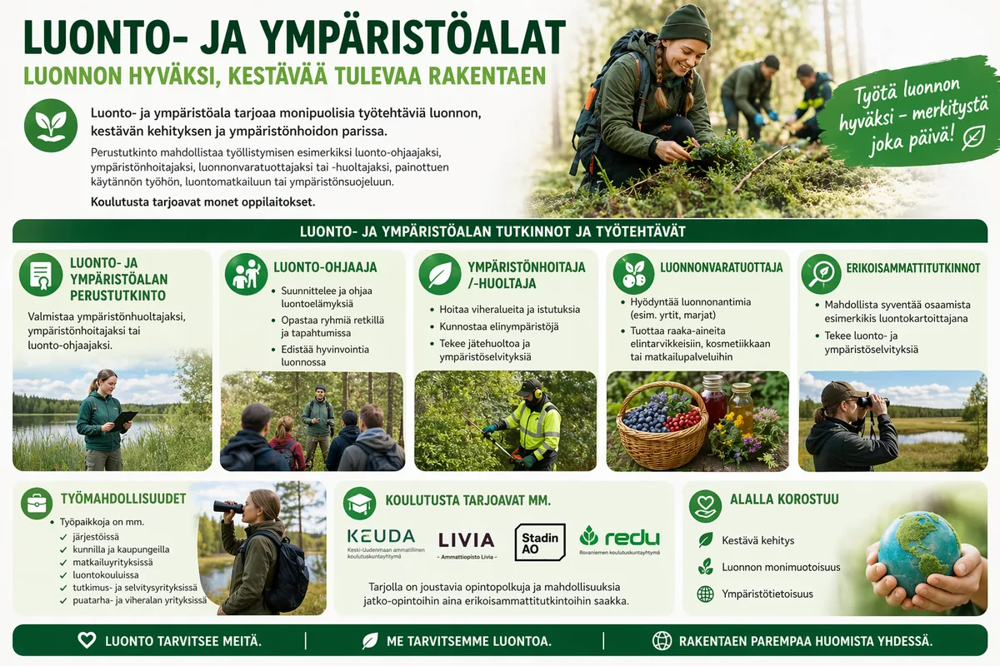
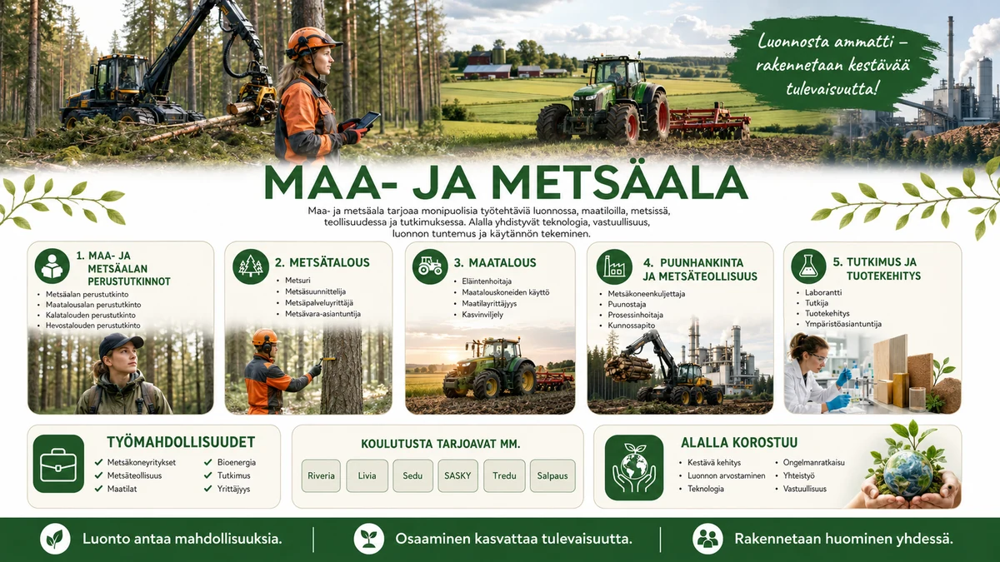
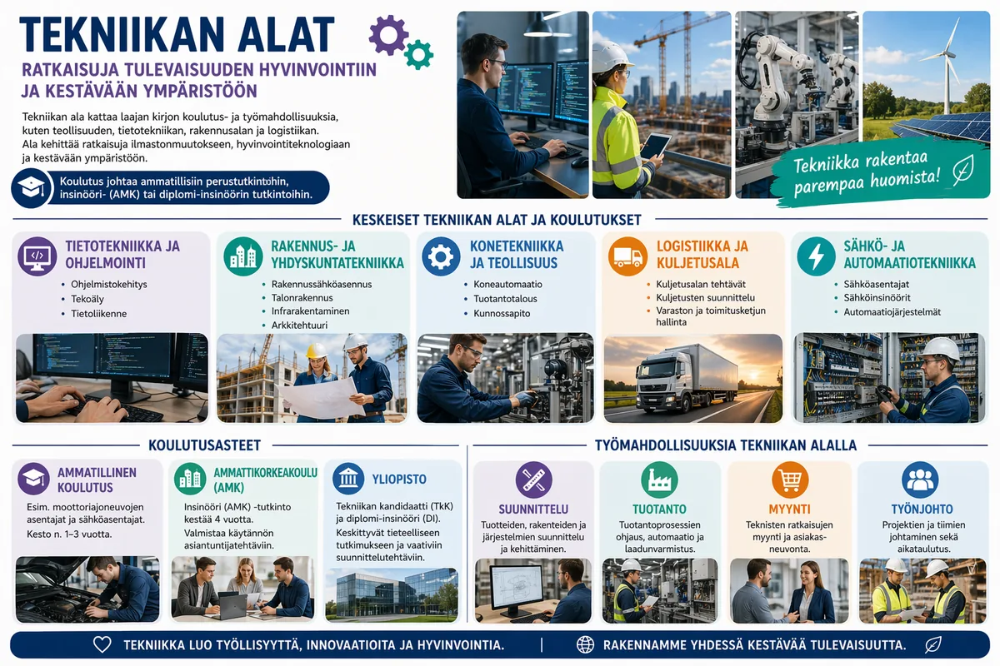
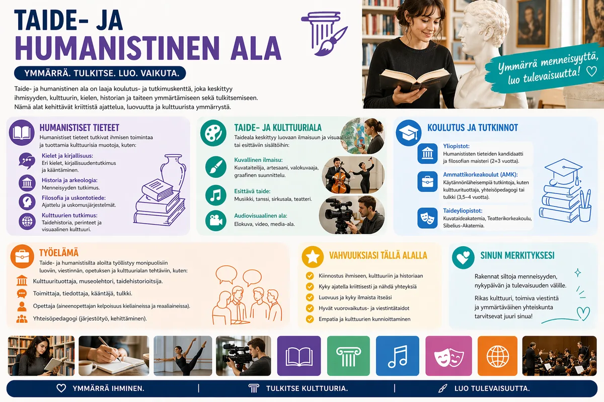
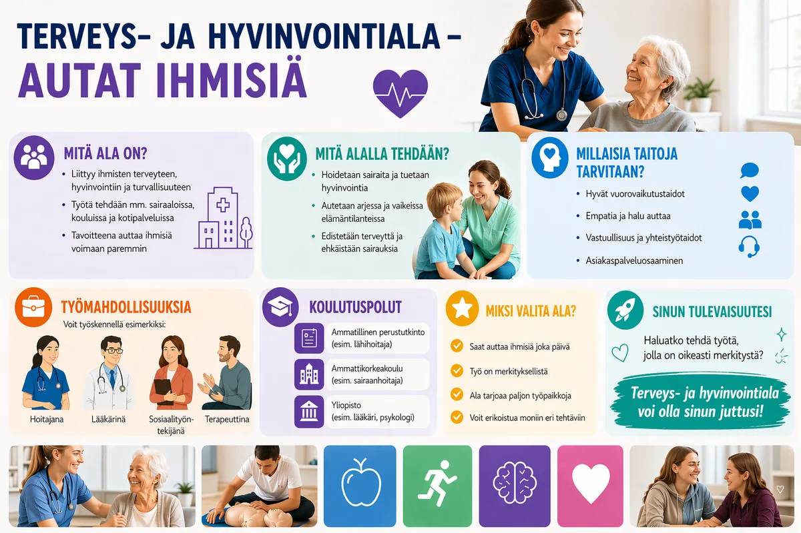

7
Sun tarina
→
8
Sun suunta
→
9
Sun valinta
8. luokka – suunta löytyy
Tänä vuonna otat suunnan
Et tiedä vielä minne — mutta alat selvittää sitä.
Tänä vuonna
Tänä vuonna tutustut koulutusaloihin ja alat hahmottaa, mikä sinua kiinnostaa — ja miksi.
Ei tarvitse tietää vielä. Mutta tänä vuonna suunta alkaa löytyä.
Aikataulu on tulossa.
Rupatteluhetki 💬
Kysymyskortit tutustumiseen ja ryhmäytymiseen – rentoa juttelua yhdessä
🎴
Tutustumispeli
Kysymyskortit
Juttele kavereiden kanssa ja tutustukaa rennosti. Nostakaa
kysymyskortteja ja vastatkaa vuorotellen – mukana hauskoja, rentoja
ja vähän syvempiäkin kysymyksiä.
Aloita peli
Näin etenet tässä osiossa
1
Tutustu koulutusaloihin
Katso koulutusjärjestelmäkaavio ja selaa koulutusalainfograafeja
→
2
Valitse polku & tee tehtävä
Amispolku tai Lukiopolku — tutki, kokeile ja kirjaa ajatuksesi
→
3
Kokeile AmmattiSet
Ryhmittele ammatit oikeille aloille — tunnetko koulutusalat?
→
4
Ryhmätehtävä
Maailma tarvitsee sinua — kokoa unelmatyöryhmä ja ratkaise ongelma
Suomessa voit valita erilaisia polkuja peruskoulun jälkeen.
Lukio, ammatillinen koulutus ja muut vaihtoehdot tarjoavat eri
tapoja oppia ja kehittyä.
Ei ole vain yhtä oikeaa reittiä.
Tiedätkö jo, haluatko enemmän oppia tekemällä vai lukemalla laajasti eri aineita?
🔍 Katso koulutusjärjestelmä-kaavio
Lukio
3 vuotta
Opiskelet laajasti eri aineita ja kirjoitat ylioppilaaksi. Ammatin saat vasta jatko-opinnoissa.
Ammattikoulu
Ammatti
Opit tekemällä oikeita työtehtäviä ja pääset nopeasti työelämään.
Kaksoistutkinto
3–4 vuotta
Ammatti ja ylioppilastutkinto yhtä aikaa. Vaatii vähän enemmän, mutta avaa tien AMK:hon ja yliopistoon.
Klikkaa kuvaa suurentaaksesi sen koko näytölle.

Luonto- ja ympäristöalat

Maa- ja metsätalousala

Tekniikan alat

Taide- ja humanistinen ala

Terveys- ja hyvinvointiala
Tutkimustehtävä
Oma reitti löytyy tutkimalla
Löysitkö kiinnostavan alan? Tutustu tutkintoihin ja lukion painotuksiin — ja valitse Amispolku tai Lukiopolku.
Tutki tarkemmin
Oma reitti löytyy tutkimalla
Tutki ennen kuin valitset — voit tutkia molempia polkuja
Amispolku
Lukiopolku
Ammatillisessa koulutuksessa opit tekemällä. Valitse kiinnostava aihe ja katso, mitä tutkintoja on tarjolla.
Mitä teet tässä tehtävässä?
Valitset sinua kiinnostavat asiat ja löydät sopivia ammatteja ja tutkintoja (Vaihe 1)
Kurkistat valittuun alaan ja teet oman alasi tehtävän (Vaihe 2)
Tutustut ammattikoulun opintoihin pähkinäkuoressa (Vaihe 3)
1
Valitse kiinnostavat asiat
2
Kurkista alaan ja tee tehtävä
3
Ammattikoulun opinnot
Vaihe 1 Valitse sinua kiinnostavat asiatEi tarvitse vielä tietää aloista mitään — valitse vain, mikä kuulostaa kivalta. Voit valita useita. Näytämme sinulle sopivia ammatteja ja tutkintoja.
Ihmiset ja auttaminen
Eläimet
Luonto ja ympäristö
Ruoka ja leipominen
Autot ja liikenne
Rakentaminen ja talot
Koneet ja tekniikka
Pelit ja ohjelmointi
Tietokoneet ja IT
Media ja video
Taide ja muotoilu
Musiikki ja esiintyminen
Kauppa ja yrittäjyys
Matkailu
Liikunta ja urheilu
Kauneus ja hyvinvointi
Turvallisuus
Nollaa
Valitse yltä, mikä sinua kiinnostaa — näytämme sinulle sopivat ammatit.
Ei tuloksia valituilla kiinnostuksilla.
⚠️
Vaihe 2 Kurkista valittuun alaan ja tee tehtäväValittuasi kiinnostuksen yltä, tee alaan liittyvä tehtävä. Tarkista ajankohtaiset tiedot Opintopolku.fi -sivuilta.
Valitse Vaihe 1:ssä jokin kiinnostava ala — sopiva ammattitilanne ilmestyy tähän automaattisesti.
Vaihe 3 Ammattikoulun opinnot pähkinäkuoressaTutustu amiksen arkeen — ja kuittaa kun olet valmis.
Opiskelu amiksessa pähkinäkuoressa
Käytännön harjoittelu
Pajassa, keittiössä tai hoitoympäristössä — teet oikeita töitä ohjatusti.
Työssäoppiminen
Olet oikealla työpaikalla viikkoja kerrallaan. Se on usein paras osa amisesta.
Näytöt — ei kokeita
Et kirjoita yo-kirjoituksia. Näytät osaamisen tekemällä oikeita töitä.
Amissakin on "kouluaineita" — YTO-aineet
Ammatillisiin opintoihin kuuluu pakollisia yleissivistäviä aineita:
Matematiikka ja luonnontieteet
Viestintä ja vuorovaikutus
Kielet (suomi, ruotsi, englanti)
Yhteiskunta- ja työelämäosaaminen
Lue lisää opintopolku.fi →
Kaksoistutkinto — ammatti + ylioppilastutkinto
Amiksessa voit tehdä ammatillisen tutkinnon lisäksi lukio-opintoja ja kirjoittaa ylioppilaaksi. Näin saat kaksi tutkintoa yhdellä kertaa. Ylioppilastutkintoon kuuluu vähintään 5 koetta. Opiskelu kestää yleensä 3–4 vuotta ja vaatii vähän enemmän — mutta se parantaa mahdollisuuksiasi hakea jatko-opintoihin (AMK tai yliopisto).
Kerro kiinnostuksesta jo yhteishaussa tai kysy asiasta omasta oppilaitoksesta. Valinnan voi tehdä myös opintojen aikana.
Lue lisää: opintopolku.fi →
Erityisammattioppilaitokset
Tarvitsetko enemmän tukea opiskelussa? Katso tästä
Jos tarvitset enemmän tukea opiskelussa, erityisammattioppilaitokset tarjoavat saman ammatillisen koulutuksen — pienemmissä ryhmissä ja yksilöllisemmin. Haetaan samassa yhteishaussa opintopolku.fi:ssä.
Aitoon koulutuskeskus
Pälkäne ja Tampere. Valmentava koulutus ja ammatilliset perustutkinnot opiskelijoille, jotka tarvitsevat enemmän tukea.
www.aikk.fi →
Ammattiopisto Live
Pääkaupunkiseutu. Pääkaupunkiseudun suurin ammatillinen erityisoppilaitos, noin 1 900 opiskelijaa vuosittain.
www.livesaatio.fi →
Ammattiopisto Luovi
Valtakunnallinen, yli 30 paikkakuntaa. 18 eri ammatillista perustutkintoa sekä TUVA ja TELMA (valmentavat koulutukset).
www.luovi.fi →
Ammattiopisto Spesia
Jyväskylä, Järvenpää, Pieksämäki ja Turku — yhteensä 12 paikkakunnalla, yli 1 500 opiskelijaa.
www.spesia.fi →
Kiipulan ammattiopisto
Janakkala, Hämeenlinna, Lahti, Nokia — 10 paikkakuntaa. Yksilöllinen koulutus ja tuettu asuminen.
www.kiipula.fi →
Optima
Pohjanmaa ja Etelä-Suomi. Ruotsinkielinen oppilaitos opiskelijoille, jotka tarvitsevat enemmän tukea opiskelussa.
www.optimaedu.fi →
Lisää tietoa erityisestä tuesta — opintopolku.fi
○ Olen tutustunut — kuittaa ✓
Hyvä työ!
Olet tutustunut ammatillisiin tutkintoihin, tehnyt oman alasi tehtävän ja saanut kuvan amisarjesta.
Muistutus: tallenna vastauksesi ja lähetä ne opettajalle Classroomin kautta.
Haluatko tutkia lisää? Katso tutkintoja ja AMK-hakua opintopolku.fi :stä.
Lukiossa opiskelet laajasti eri aineita ja haet yliopistoon tai ammattikorkeakouluun. Ylioppilaskirjoitukset ovat opiskelun päätepiste.
Mitä teet tässä tehtävässä?
Valitset, mitkä aineet kiinnostavat sinua
Tutustut lukion painotuksiin ja erikoislukioihin
Opit, mihin lukion jälkeen voi hakea
Kirjaat ajatuksesi ja teet oman lukiosuunnitelman
1
Valitse kiinnostavat aineet
2
Erikoislukiot & arki
3
Jatko-opinnot
4
Suunnitelmasi
Vaihe 1 Mitkä aineet kiinnostavat?Valitse yksi tai useampi aine. Näytämme sopivia painotuksia — lukiossa ei valita kiinteää linjaa, vaan omia painotuksia ja opintoja.
Kielet
Matematiikka ja luonnontieteet
Yhteiskunta ja historia
Taide ja musiikki
Liikunta
Viestintä ja media
Kansainvälinen IB-tutkinto
Nollaa
Kaikki painotukset
Ei tuloksia.
Lähde: opintopolku.fi/lukiokoulutus
Vaihe 2 Erikoislukiot & arkiJotkut lukiot ovat erikoistuneet tiettyyn alaan. Niihin haetaan usein pääsykokeen kautta — lisätietoa opintopolku.fi :stä.
Päivä lukiolaisena
8:15
Matematiikka (pitkä) Emre valitsi pitkän matikan. Se avaa enemmän ovia yliopistoihin.
10:00
Englanti — kirjallisuuden analyysi Kurssit ovat itsenäisempiä kuin yläasteella. Opettaja ei huolehdi sinun puolestasi.
12:00
Aukko lukujärjestyksessä Emre opiskelee kirjastossa seuraavaa koetta varten. Vapaus on myös vastuu.
15:30
Päivä päättyy "Lukio on vapaampi kuin yläaste — mutta vastaat itse itsestäsi." — Emre
8:00
Theory of Knowledge — tietoteoria IB:ssä on pakollinen filosofinen kurssi. Miten tiedämme mitä tiedämme?
10:00
Higher Level Mathematics — vaativa matematiikka Vaativampaa kuin suomalainen pitkä matikka. Yuki tähtää yliopistoon ulkomaille.
14:00
Extended Essay — tutkimusessee IB:ssä kirjoitetaan 4 000 sanan essee itse valitusta aiheesta.
16:00
CAS — vapaaehtoistoiminta ja harrastukset "IB on rankka — mutta se avaa ovet maailmalle." — Yuki
7:00
Aamuharjoitukset Aino on salilla ennen koulua. Valmennus on osa lukujärjestystä.
9:30
Lukio-opinnot Tunnit on sijoitettu niin, että harjoitukset sopivat. Etätunnit ovat osa arkea.
15:00
Joukkueharjoitukset Joukkuetoverit ovat myös luokkakavereita. Se on urheilulukion paras puoli.
18:30
Kotitehtävät "Väsymys on osa arkea — mutta se on sen arvoista." — Aino
Kolme vuotta lukiossa
1. vuosi
Aloitat ja löydät suuntasi
Valitset kiinnostavia opintoja ja mahdollisen painotuksen
Pakolliset opinnot kaikille
Uusi opiskelutapa — opit ottamaan itse vastuuta
Valinnaisia opintoja kokeilemaan
150 opintopistettä
2. vuosi
Syventät ja suunnittelet
Syventäviä opintoja omasta kiinnostuksesta
Ylioppilaskirjoitusten suunnittelu alkaa
Mahdollinen vaihto-opiskelu ulkomailla
Jatko-opintohaaveet selkiytyvät
Suunta selkenee
3. vuosi
Yo-kirjoitukset ja jatko
Ylioppilaskirjoitukset — vähintään 5 koetta
Haku AMK:iin tai yliopistoon
Tulevaisuus alkaa hahmottua
Valmistuminen keväällä
Ylioppilastutkinto
Lukion lopussa: ylioppilastutkinto → haku AMK:iin tai yliopistoon
Vaihe 3 Lukion jälkeen — mihin voi hakea?Lukiosta pääsee ammattikorkeakouluun (AMK) tai yliopistoon. Kiinnostusnappit suodattavat vaihtoehtoja myös tässä.
AMK — ammattikorkeakoulu
Käytännönläheinen. Kesto 3–4 v. Voit hakea suoraan yo-todistuksella tai pääsykokeella. Tutkinto: AMK-tutkinto .
Yliopisto
Tieteellinen. Kesto 5–6 v (kandi + maisteri). Ylioppilaskirjoitusten arvosanat ratkaisevat usein sisäänpääsyn. Tutkinto: maisteri .
Ammattikoulu
Myös ammatillinen koulutus on hyvä reitti. Sieltä pääsee töihin ja myös korkeakouluun.
Tutki myös Amispolkua →
Kaikki vaihtoehdot
Ei tuloksia valituilla kiinnostuksilla.
Kaikki koulutusohjelmat — opintopolku.fi
Vaihe 4 Oma lukiosuunnitelmaVastaa yhteen kysymykseen kerrallaan — kuin pelissä.
Kysymys 1 / 5
Mikä lukion painotus tai erikoislukio kiinnostaa eniten?
Seuraava
Kolme ainetta, jotka haluaisin valita:
Seuraava
Mitä haaveilen opiskelevani tai tekeväni lukion jälkeen?
Seuraava
Yksi asia, jonka pitää vielä selvittää:
Tallenna ✓
Lataa suunnitelma TXT-tiedostona — lähetä Classroomiin
Tyhjennä vastaukset
Hyvä työ!
Olet tutustunut lukion painotuksiin, erikoislukioihin ja jatko-opintomahdollisuuksiin — ja tehnyt oman suunnitelmasi.
Haluatko tutkia lisää? Katso lukiokoulutusta opintopolku.fi :stä.
Pelaa ja testaa – tunnetko ammatit?
AmmattiSet – tunnistatko koulutusalat?
Ryhmittele ammatit oikeille aloille. Paras tuloksesi tallentuu yhteiseen tulostauluun!
Pelaa AmmattiSet!
Maailma tarvitsee tekijöitä
Olipa sinulla mikä tahansa ammatti, maailma tarvitsee tekijöitä.
Seuraavaksi kokoatte ryhmässä unelmatyöryhmän ja ratkaisette yhdessä ongelman.
🌍 Maailma tarvitsee sinua
Valitse ryhmälle ongelma, kokoa unelmatyöryhmä eri aloilta ja suunnitelkaa yhdessä ratkaisu.
Avaa tehtävä
🧑💻 Oppimaan oppimisen klinikka
📘 Osion opettajan ohjeMikä opiskelussa tyssää? Valitse aihe ja kulje polku läpi.
i
🧑💻 Tehdään itsenäisesti omalla laitteella
🧭 Kulku: valitse aihe → vastaa → valitse keino → kirjoita oppimisen avainPalautus: lataa oppimisresepti.txt → ClassroomVinkki: voit käydä useamman aiheen läpi
Avaa tehtävä
Lähteet ja pedagoginen tausta
✕
Oppimaan oppimisen klinikan taustalla oleva oppimiskäsitys ja keskeiset lähteet.
📚 Päälähde – tehtävien suunnittelu
Vorderman, Carol ym. (2017): Opiskelutaidot – Auta koululaista parempiin tuloksiin . Suom. Veli-Pekka Ketola. Readme.fi. (ISBN 9789523214408)
Opetussuunnitelma
Opetushallitus (2014): Perusopetuksen opetussuunnitelman perusteet – laaja-alainen osaaminen L1, Ajattelu ja oppimaan oppiminen . OPH ↗
🧠 Oppimispsykologian periaatteet
Klinikan opiskelutekniikat (muistin kertaaminen sopivin välein, aktiivinen lukeminen, ajanhallinta ja keskittyminen) pohjautuvat oppimispsykologian vakiintuneisiin periaatteisiin, mm. työmuistin rajallisuus (Cowan, 2001), hajautettu harjoittelu (Ebbinghaus, 1885) ja unen merkitys muistin vahvistumisessa.
Voit täydentää lähdeluetteloa oman tarpeesi mukaan.
Näin etenet tässä osiossa
1
Vahvuusmatka
Interaktiivinen tarina — löydä omat vahvuutesi tekemällä valintoja · yksin
→
2
Fake Insta
Luo some-profiili vahvuuksistasi parin avulla · pareittain
→
3
Yhteiskeskustelu
Onko some-vaikuttajan työ oikeaa työtä? · koko luokka
Vahvuusmatka
Lähde matkalle omiin vahvuuksiisi. Tee valintoja ja löydä, missä
sinä loistat.
Aloita matka
Vinkki: kokeile eri valintoja uudestaan
📱 Fake Insta
Luo paperille someprofiiili, jonka kaikki sisältö ovat sinun vahvuutesi.
Parisi toimii somemanagerinasi ja auttaa löytämään ne.
Avaa tehtävä
👥 Pareittain · ✏️ Paperi + kynä
⭐
Haluatko lisää haastetta?
Luo oma vahvuuskartta : kirjoita itsellesi tärkeät vahvuudet, mihin tilanteisiin ne sopivat ja missä haluaisit kehittyä. Perustele jokainen valinta yhdellä konkreettisella esimerkillä omasta elämästäsi.
Pohdi myös ns. piilossa olevia vahvuuksia — asioita, jotka sujuvat sinulta niin luontevasti, ettet edes huomaa niitä
TET-jakso on mahdollisuus nähdä työelämää oikeasti. Saat
kokemusta, opit uutta ja huomaat, mikä kiinnostaa – tai ei.
Kokemus auttaa valinnoissa.
TET-jakso
Näe
Näet, millaista työelämä oikeasti on.
TET-jakso
Opi
Saat kokemusta ja opit uutta.
TET-jakso
Huomaa
Huomaat, mikä kiinnostaa – tai ei.
Näin TET-harjoittelu etenee – klikkaa vaihetta nähdäksesi lisätietoja:
🏫
1
Koulu
→
🏢
2
Työpaikka
→
📄
3
Työsopimus
→
👩🏫
4
Opo
→
💼
5
TET-viikko
→
🏅
6
Työtodistus
1. Koulu antaa työsopimuslomakkeen
Ennen TET-harjoittelua oppilas saa opolta tyhjän työsopimuslomakkeen. Lomake on virallinen asiakirja, joka pitää toimittaa tulevalle TET-työpaikalle.
📋 Pidä lomake tallessa ja siistinä!
2. Oppilas käy kysymässä TET-paikkaa
Oppilas menee lomakkeen kanssa haluamiinsa työpaikkoihin ja kysyy: „Voinko päästä teille TETtiin?"
Jos vastaus on kyllä → siirry seuraavaan vaiheeseen
Jos vastaus on ei → kokeile seuraavaa työpaikkaa
💡 Älä lannistu – useimmat löytävät paikan muutaman yrityksen jälkeen!
3. Työnantaja täyttää lomakkeen
Kun työnantaja suostuu, hän täyttää työsopimuslomakkeen ja allekirjoittaa sen. Oppilas saa täytetyn lomakkeen itselleen.
Oppilas vie lomakkeen opolle mahdollisimman pian.
📄 Asiakirja: työsopimuslomake (täytetty) → toimitetaan opolle
4. Opo säilyttää – ja palauttaa ennen TETiä
Opo ottaa sopimuksen talteen ja tarkistaa sen. Vähän ennen TET-viikon alkua opo antaa sopimuksen oppilaalle takaisin.
Tarvittaessa opo antaa myös matkaliput TET-paikkaan kulkemista varten.
🎫 Muista: kysy opolta matkaliput jos tarvitset!
5. TET-harjoitteluviikko
Oppilas menee TET-paikkaan työsopimuksen ja mahdollisten matkalippujen kanssa. Harjoittelu alkaa!
💼 Tee töitä ahkerasti, ole ajoissa ja käyttäydy asiallisesti.
6. Työtodistus opolle
TET-harjoittelun päätyttyä työnantaja kirjoittaa oppilaalle työtodistuksen. Oppilas toimittaa työtodistuksen opolle.
🏅 TET-harjoittelu on nyt suoritettu – hienoa työtä!
📨 Ota yhteyttä työnantajaan
Harjoittele TET-paikan hakemista. Täytä tiedot — saat valmiin viestin, jonka voit lähettää tai muokata.
Avaa tehtävä
✍️ Yksilötehtävä · 📨 Luo viesti
Suurin osa töistä, joihin sinä työllistyt, ei ole vielä olemassa.
Kukaan ei tiedä tarkalleen, millainen maailma odottaa — ei tutkijat,
ei opettajat, ei edes tekoäly.
Mutta se ei tarkoita, että tulevaisuus tapahtuu sinulle ilman sinua.
Tällä oppitunnilla kuvitellaan ja rakennetaan — millainen työpaikka sinua
odottaa, mitä siellä tehdään, ja mikä oma paikkasi voisi olla.
🎰 Pyörä pyörii – satunnainen ura
Saat satunnaisen, harvinaisen ammatin. Sinulla on 3 minuuttia valmistautua —
ja sitten vakuutat muut täydellä vakavuudella, miksi se on täydellinen juuri sinulle.
Avaa tehtävä
🎭 Koko luokka · 🎰 Arvonta
Ryhmätehtävä
Tulevaisuuden työpaikka
Valitse ryhmänä yksi "Entäs jos" -kysymys ja rakentakaa sen pohjalta tulevaisuuden työpaikka.
Avaa tehtävä
Jokainen ryhmä esittelee oman työpaikkansa — käy läpi neljä kohtaa, muut kuuntelevat ja äänestävät lopuksi.
Tilanne: Mikä "Entäs jos" -kysymys teillä oli?Nimi & paikka: Mikä teidän työpaikka on ja missä se sijaitsee?Työ: Mitä siellä tehdään?Luokka äänestää: Mihin paikkaan haluaisit itse mennä töihin?
⭐
Haluatko lisää haastetta?
Kirjoita koulutusjärjestelmän manifesti : mitkä kolme asiaa haluaisit ehdottomasti muuttaa nykyisessä koulussa, ja miksi? Perustele jokainen muutos oppimistutkimuksella tai omalla kokemuksella. Mitä hyötyä tai haittaa muutoksista voisi olla?
Parhaat ideat syntyvät, kun pohdit sekä opiskelijan että opettajan näkökulmaa

 Pohdi myös ns. piilossa olevia vahvuuksia — asioita, jotka sujuvat sinulta niin luontevasti, ettet edes huomaa niitä
Pohdi myös ns. piilossa olevia vahvuuksia — asioita, jotka sujuvat sinulta niin luontevasti, ettet edes huomaa niitä